FMOD Studio User Manual 2.02
In FMOD Studio 2.01, many aspects of the creation, project navigation, and profiling workflows have been streamlined.
Beyond general improvements to the overall look and feel, a number of feature highlights from FMOD Studio 2.01 are listed below.
In addition to the new features listed, a number of additional stability and usability enhancements have been made. Please see the detailed revision history for full details.
Action sheets provide a new, simplified way to trigger instruments. Instruments placed on an action sheet are triggered when an event is played. Action sheets can be set to play instruments in a consecutive or concurrent fashion. Instruments on action sheets are always routed to the event's master track.
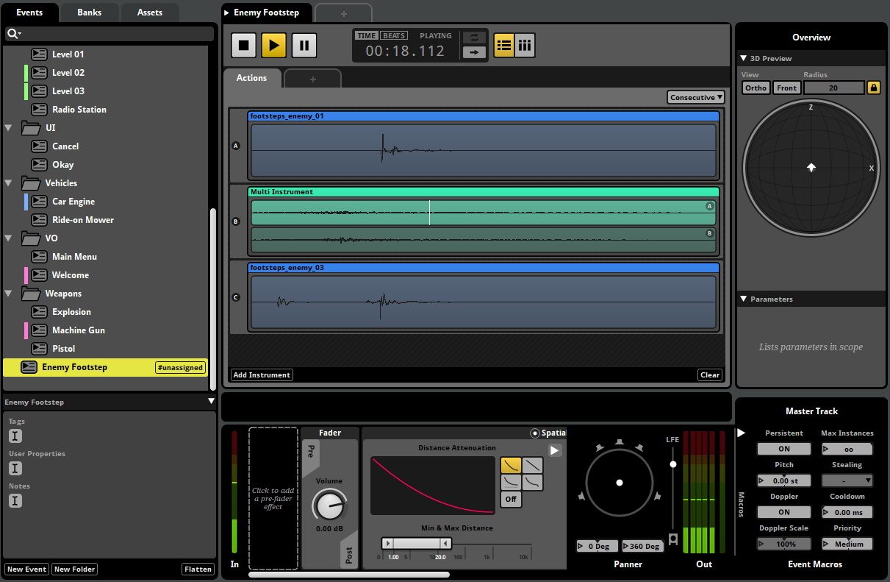
Action sheets can be used to tidy up a project and are useful when an event doesn't require the conditional behavior of a timeline or parameter sheet.
All browser items can now be assigned a color and notes.
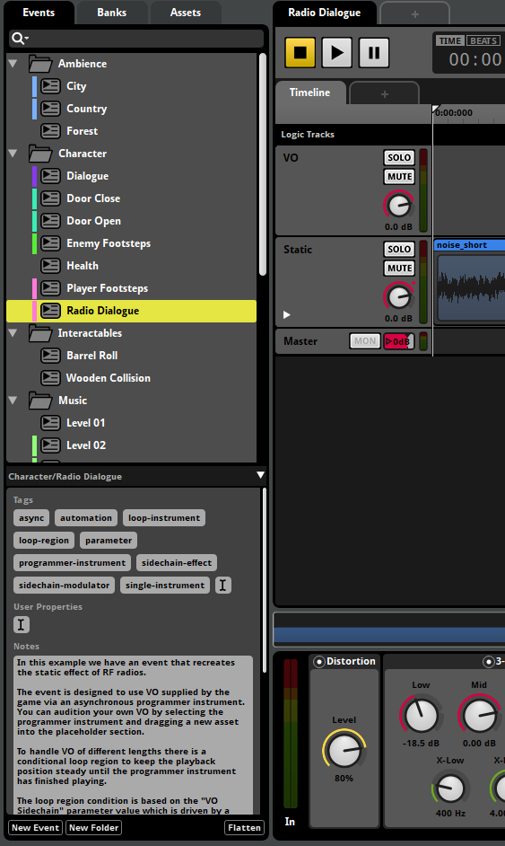
Browser items' notes are now displayed in the inspector at the bottom of the browser pane. For items with tags and user properties, these are also displayed at the bottom of the browser pane.
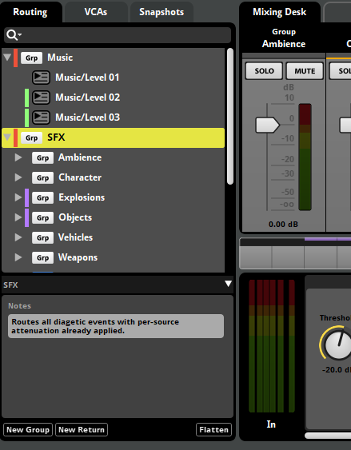
Colors are very useful when organizing a project. Browsers items can be filtered by color from the browser search bar's loupe menu.
The sandbox now supports the creation of scenes. Scenes store event emitter locations, parameter values, and listener locations. Scenes can be created to simulate various game states and scenarios for offline testing.
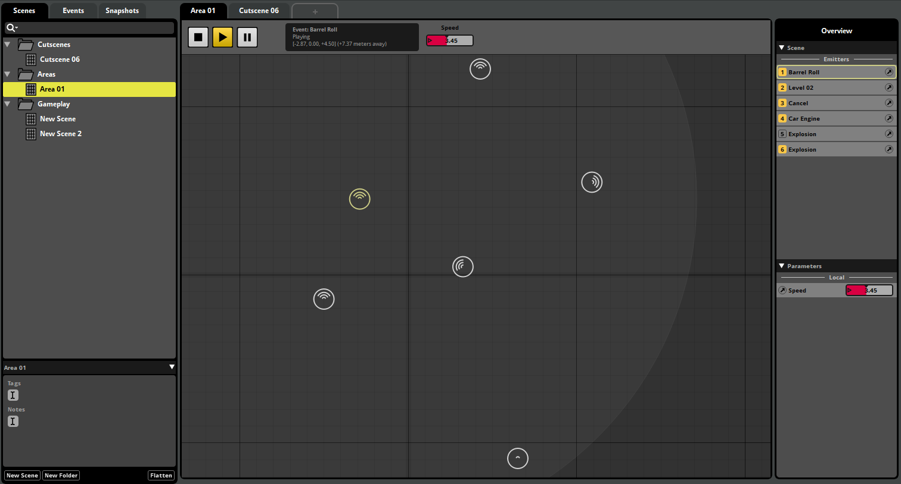
Objects in a scene are also displayed in the overview on the right of the sandbox window. This can be used to browse a scene's emitters and listeners. The number keys can be used to quickly toggle playback for each of the emitters in a scene.
The profiler has been revamped to make navigating through a session's data much easier.
In Studio 2.01, profiler sessions are saved as part of the project, instead of being saved per user. This makes it easy to share sessions between team members.
The new profiler table view can be used to get an overview of all recorded data in a session. The table view can be selected from the button group in the transport bar.
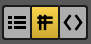
From the profiler table view, you can switch between displaying instantaneous values, or the minimum, maximum or average values for a given range of time. When using a range-based view mode, a range selector is available below the timeline.
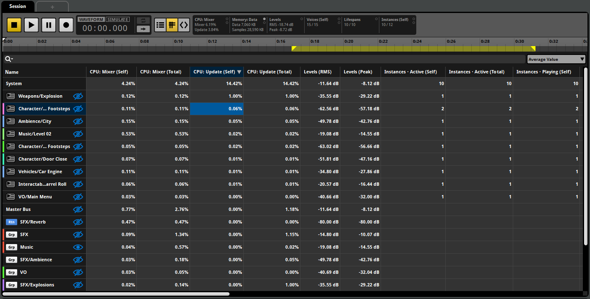
The profiler table view can be used to quickly filter for data using the search bar at the top of the view. Data can be sorted by a particular column by clicking on column headings. Profiler graphs can be toggled for each data row using the buttons in the name column.
Support for detailed profiling of memory usage has been added in 2.01. This allows memory to be tracked per event, per bus, and globally. Memory is tracked separately for data and samples.
To enable memory profiling, the FMOD_STUDIO_INIT_MEMORY_TRACKING flag must be enabled during initialization of the FMOD Engine.
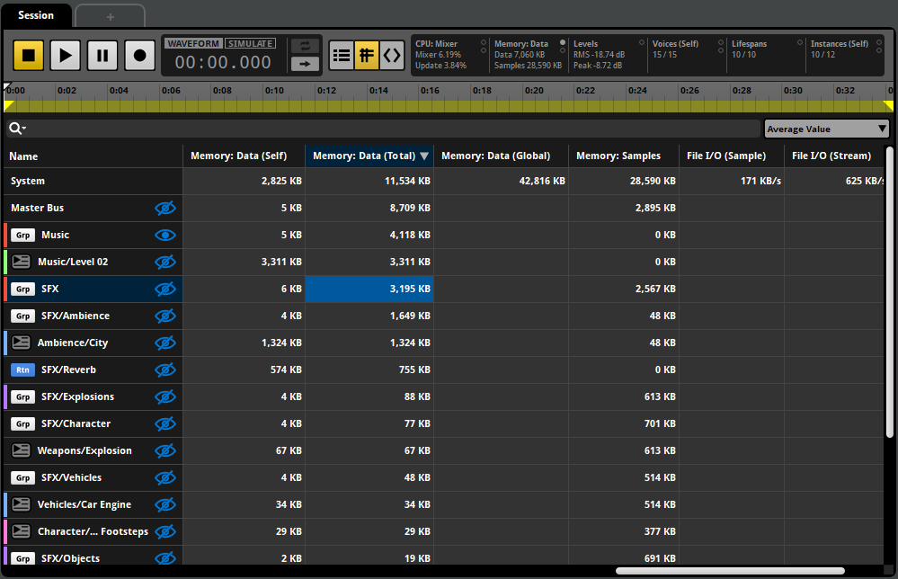
Command instruments can now issue a variety of different commands:
These behaviors allow for complex interactions between events and can reduce the need for code modifications.
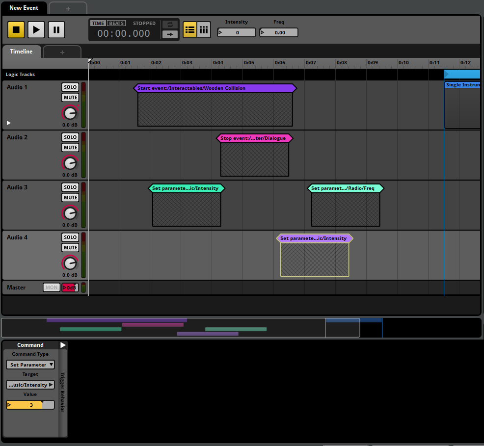
Conditional logic has been extended to support a wider range of expressions.
A mode selector has been added to the condition lists of instruments and logic markers. This can be used to control how multiple conditions are resolved:
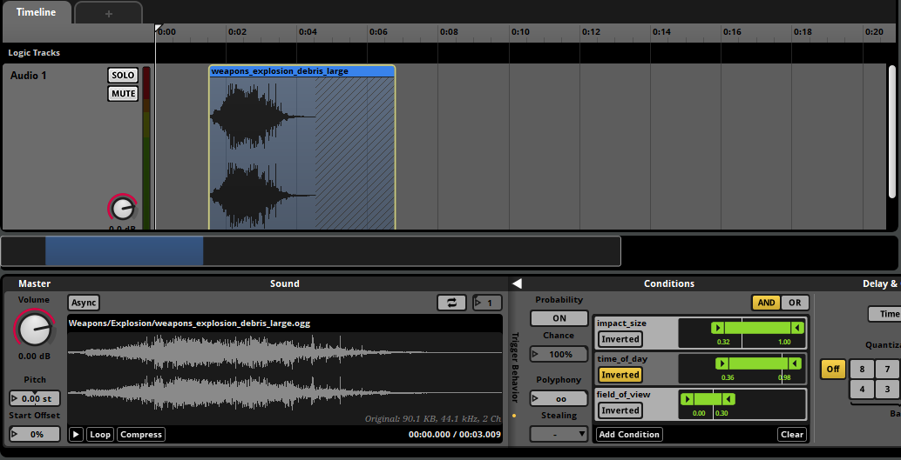
Each parameter condition can also be inverted, making it possible to check that a parameter value falls outside a particular range.
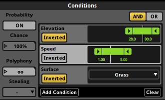
Event conditions are now available for conditions lists. Event conditions are used to check whether an event has entered the stopping play state.
When an event containing an event condition is issued the stop command, it waits for its natural end before entering the stopped play state.
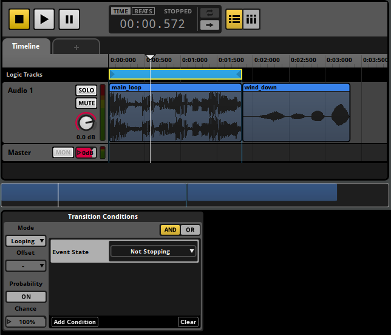
A number of enhancements make working with the event editor's 3D preview and profiler's 3D view easier.
You can now toggle between orthographic and fisheye projections, toggle between front and top views, and specify a custom view radius. These options make it straightforward to work with different camera perspectives.
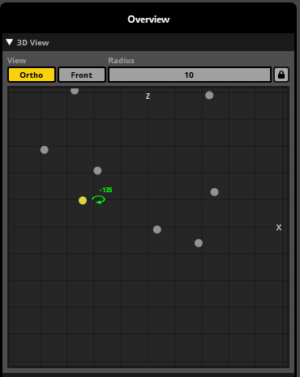
The mixer window has been redesigned to be more consistent with other window layouts. The tabs at the top of the mixer can be used to switch between different snapshot selections.
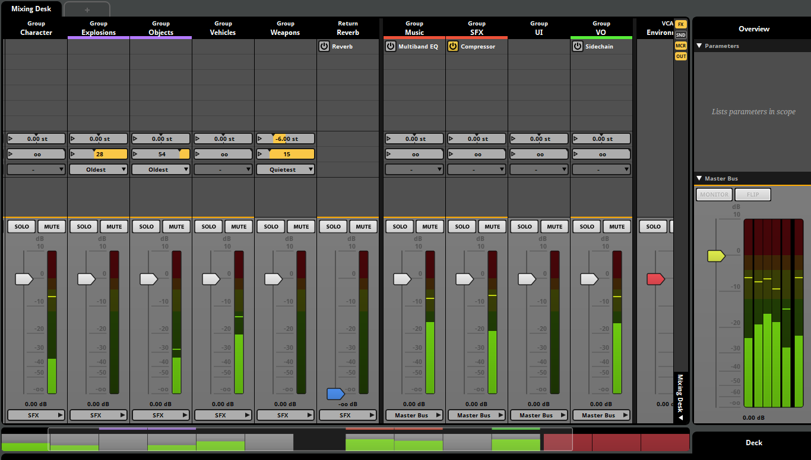
Strips displayed in the mixer have new sets of controls available, allowing for quick access to effects, sends, macros, and routing. These new sets of controls have been optimized to work with both wide and compact strips views.
A sidebar has been added to the right of the mixing desk. Buttons at the top of the sidebar can be used to show and hide sets of controls. The bottom of the sidebar contains controls for selecting the active mixer view.
Silence instruments can now be added to playlists. These can be used to sequence gaps in a multi instrument.
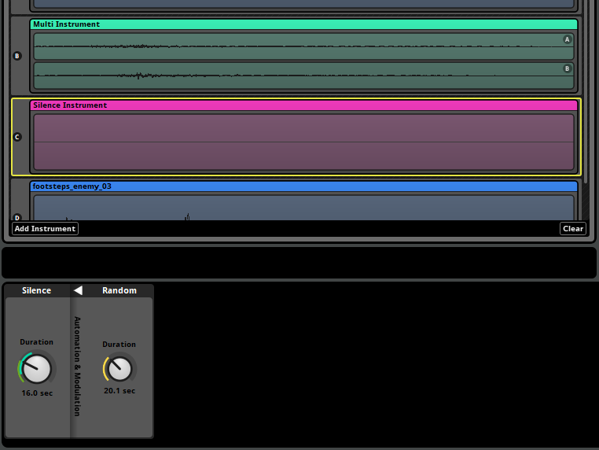
The duration of the silence can be automated or modulated. Silence instruments with random modulators can be used to insert variable length gaps between playlist entries.
The panner effect can now be placed like a regular effect. This makes it easy to apply panning or change the channel format in the middle of a signal chain.
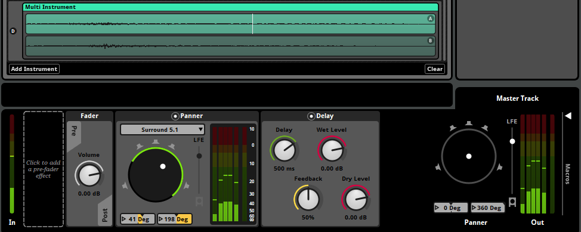